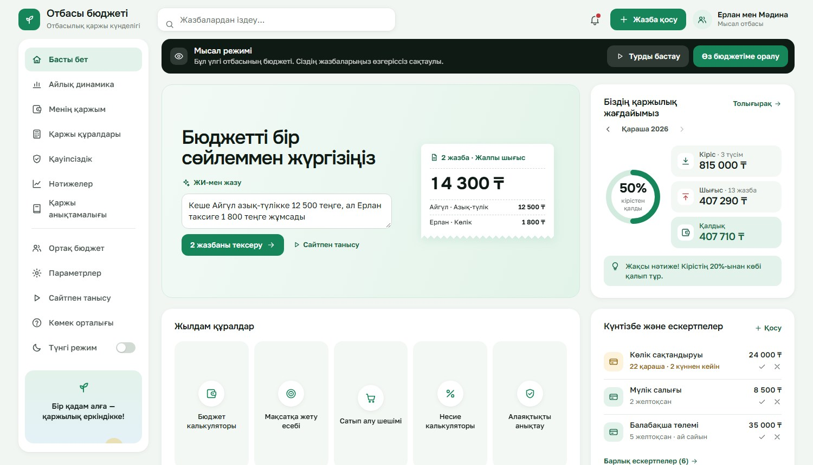
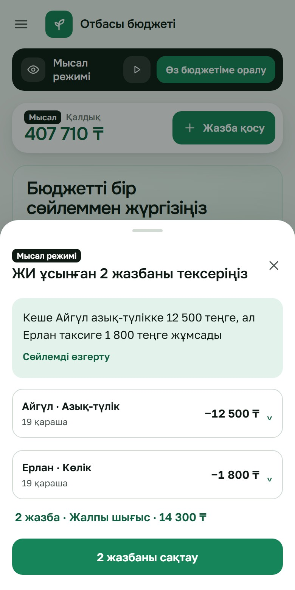

StartUp Battle — IT FEST 2026 · Студенттер
Отбасы бюджеті
Бір сөйлеммен кімнің қанша жұмсағанын айтыңыз. Жасанды интеллект жазбаларды дайындайды, сіз тексеріп, сақтайсыз.
Қазақша ЖИҚұрылғыда жұмыс істейдіДемоны ашу
[Команда мүшелерінің аты-жөнін, ЖОО-сын және курсын жазыңыз.]

Мәселе
Әркім бөлек төлесе, отбасының шығынын қалай есептейміз?
Шығын бірнеше жерде
Бір адам азық-түлік алады, екіншісі такси ақысын төлейді. Екеуінің де төлемін жазғанда ғана жалпы сома шығады.
Бір картаның көшірмесі жеткіліксіз
Көшірмеде қолма-қол сатып алынған заттар мен басқа отбасы мүшесінің картасынан жасалған төлемдер көрінбейді.
Қолмен енгізуге уақыт кетеді
Әр сатып алуға бес өріс толтырылады. Ашық сынақта оны қазақша бір сөйлеммен енгізу уақытымен салыстыруға болады.
[Команда отбасылармен жүргізілген сұхбаттан мәселені көрсететін бір-екі дәйексөз енгізеді.]
Отбасы бюджеті
2
Шешім
Бес өрісті бір сөйлеммен толтыру
«Айгүл Магнумнан 12 500-ге азық-түлік алды»
↓ ЖИ
ТүріШығыс
Сома12 500 ₸
КімАйгүл
СанатАзық-түлік
СипаттамаМагнумнан азық-түлік
- Қазақша немесе орысша теруге, дауыспен айтуға болады.
- Адам ұсынылған жазбаны тексеріп, сақтайды.
- Жазба сақталған соң айлық қалдық, санаттар мен әр адамның шығысы жаңарады.
- Жеке бюджет құрылғыда қалады. Ортақ бюджет екінші телефонға жіберілер алдында шифрланады.
Отбасы бюджеті
3
Демо · жұмыс істейтін MVP
Бір сөйлемдегі екі шығын — 14 300 ₸


Айгүлдің азық-түлігі — 12 500 ₸, Ерланның таксиі — 1 800 ₸. Расталған екі төлем де тарихта көрінеді. Сайтта байқап көру
4
Жасанды интеллект
Сөйлем бюджет жазбасына қалай айналады?
1. Мәтін не дауыс
Пайдаланушы сөйлемді жазады немесе дауыстап айтады. Браузер Web Speech API арқылы қазақша сөзді мәтінге айналдыра алады.
→
2. Жергілікті модель
297 белгіленген мысал. Жіктеуіш кірісті және шығыстың төрт санатын ажыратады. Ережелер соманы, күнді және есімді табады.
→
3. Қосымша Gemini
Жеке бюджетте бір жазбаны талдау мен еркін сұрақтар үшін қосылады. Кілті Apps Script ішінде сақталады.
→
4. Растау
Адам өрістерді тексеріп, қажет болса түзетеді. Содан кейін ғана жазба сақталады.
Бір сөйлемдегі сегізге дейін операция құрылғыда өңделеді. Көмекші шығынды тарих бойынша есептеп, жауапқа қай жазбалар кіргенін көрсетеді.
Отбасы бюджеті
5
ЖИ сапасы
Жергілікті модельдің сынақ нәтижелері
86%
Баптау кезінде қолданылмаған 50 мысалдың 43-інде санат дұрыс анықталды.
28/28
Барлық сөйлемде сома, есім, жазба түрі және санат дұрыс шықты.
96,5%
0,60 сенімділік шегінен өткен мысалдардағы дәлдік. Екі жиындағы 150 мысалдың 94,7%-ы осы шектен өтті.
0 ₸
Құрылғыдағы модельге бір сұрау жіберу құны. Жіктеу браузерде орындалады.
Мысалы, модель «ванна жөндеу» тіркесін көлік санатына жатқызды. Адам санатты сақтар алдында түзете алады. Барлық нәтижелер · Бағалау скрипті
Отбасы бюджеті
6
ЖИ-ді жауапты қолдану
Телефонда не сақталады, серверге не жіберіледі?
Деректердің құпиялығы
- Жеке тарих браузерде сақталады. Сервер ортақ бюджетті шифрланған күйде сақтайды. Кілт шақыру сілтемесінде.
- Пайдаланушы Gemini-ді қосса, Google бір сөйлемді немесе сұрақ пен жиынтық сандарды алады.
- Gemini API кілті Google Apps Script қасиеттерінде сақталады.
Бақылау және ашықтық
- Адам өрістерді тексереді. ЖИ көмегімен енгізілген жазба тарихта «ЖИ» белгісімен көрсетіледі.
- Көмекші жауап көзін көрсетеді. Нақты соманы құрайтын жазбаларды ашуға болады.
- Жобаның өзіндік бағасы бойынша тәуекел деңгейі ең төменгі. Қосымша адамдар туралы шешім қабылдамайды.
Отбасы бюджеті
7
Нарық
Ортақ шығыны бар қазақстандық отбасылар
Алғашқы аудитория
Табысы айына 300–900 мың ₸ болатын балалы отбасылар. Алғашқы сынаққа 25–40 жастағы отбасыларды, мұғалімдер мен ипотека төлеп жүргендерді тарту көзделген.
Неліктен қазір?
Баға мен қарыз жүктемесі отбасылық есепке әсер етеді. Қаржылық сауаттылық бағдарламалары мен қазақша дауыстық хабарлама жіберу әдеті осы шешімді сынауға мүмкіндік береді.
Кеңею бағыты
Алдымен Қазақстан. Кейін Орталық Азия үшін жаңа тілдер мен санаттарға арналған мысалдар жинап, модельді қайта үйретуге болады.
[Команда stat.gov.kz дерегімен үй шаруашылықтарының санын және осы табыс тобының үлесін көрсетеді.]
Отбасы бюджеті
8
Бәсекелестер
Қолма-қол ақша мен әр банктегі төлемді бірге есептеу
| Мүмкіндік | Kaspi / Halyk | CoinKeeper | Monefy / Spendee | Дәптер / Excel | Отбасы бюджеті |
|---|
| Қолма-қол ақша, өзге банк | Жоқ | Қолмен | Қолмен | Иә | Бір сөйлеммен |
| Әр отбасы мүшесінің шығысы | Жоқ | Ішінара | Жоқ | Қолмен | Басты бетте |
| Қазақша интерфейс | Бар | Жоқ | Жоқ | — | Бар |
| ЖИ арқылы мәтінмен не дауыспен енгізу | Жоқ | Жоқ | Жоқ | Жоқ | Қазақша және орысша |
| Тіркелу, шотқа кіру | Банк аккаунты | Аккаунт | Аккаунт | Қажет емес | Қажет емес |
| Баға | Тегін | Жазылым | Негізгісі тегін | Тегін | MVP тегін. Жазылым жоспарда. |
Отбасы бюджеті
9
Бизнес-модель
Отбасыларға жазылым, серіктестерге лицензия
Тегін мүмкіндіктер
Бюджетті жүргізу, жергілікті ЖИ, екі телефонға арналған шифрланған бөлме, диаграммалар, лимиттер мен еске салғыштар.
«Отбасы+» · 990 ₸/ай
Чек фотосын оқу мен кеңейтілген есептерге жазылым ұсынуды жоспарлап отырмыз. Жылдық баға болжамы — 7 900 ₸.
B2B · жылына 1,5–3 млн ₸
Банктерге, микроқаржы ұйымдарына, ЖОО-лар мен әкімдіктерге қаржылық сауаттылық бағдарламасы үшін лицензия беру қарастырылған.
Бір ақылы отбасынан түсетін айлық табыс болжамы — шамамен 800 ₸. ЖИ мен сервер шығыны бір белсенді отбасыға айына 28 ₸ шегінде болса, 30 000 белсенді отбасы және үш B2B шартымен жоба өзін-өзі ақтауы мүмкін.
Отбасы бюджеті
10
Нәтиже және жоспар
Бүгін не дайын, алда не бар?
Қазір
[Қолданатын отбасылардың расталған санын немесе тапсырыс берушінің пікірін енгізіңіз.]
24 айға арналған мақсат
- 1–3 ай. 20–30 отбасымен сынақ өткізіп, ЖИ сапасын күнделікті сөйлемдерде өлшеу.
- 4–6 ай. Чек фотосынан енгізу мен жазылымды сынау, 1 000 отбасыға жету.
- 7–12 ай. 10 000 отбасы және алғашқы B2B серіктес.
- 13–24 ай. 50 000 отбасы және үш B2B шарты.
Отбасы бюджеті
11
Команда және қажет қолдау
Сынақты бірге өткізетін серіктес пен тәлімгер іздейміз
Команда
[Капитанның аты-жөні, ЖОО-сы, курсы және жобадағы рөлі]
[Жансұлудың аты-жөні, ЖОО-сы, курсы және рөлі]
Код пен мәтінді дайындауда ЖИ қалай қолданылғаны ЖИ картасында көрсетілген.
Қажет қолдау
- Банкпен, микроқаржы ұйымымен немесе ЖОО-мен бірге қаржылық сауаттылық бағдарламасында сынақ өткізу.
- Өнім мен табыс моделін дамыту бойынша тәлімгерлік.
- Сервисті ұстауға және сынақ өткізуге акселерациялық қолдау мен грант.
Екі шығынды демода енгізу · Сынақтан өту
12